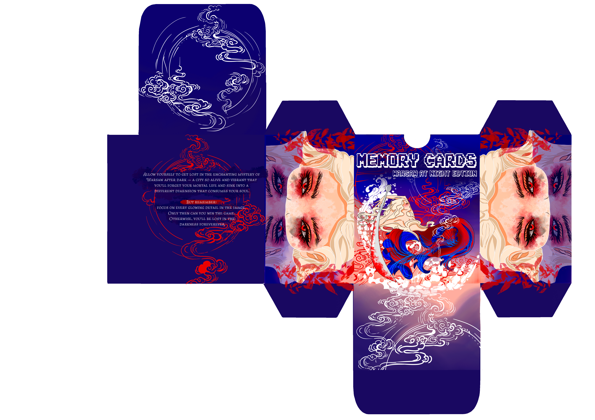
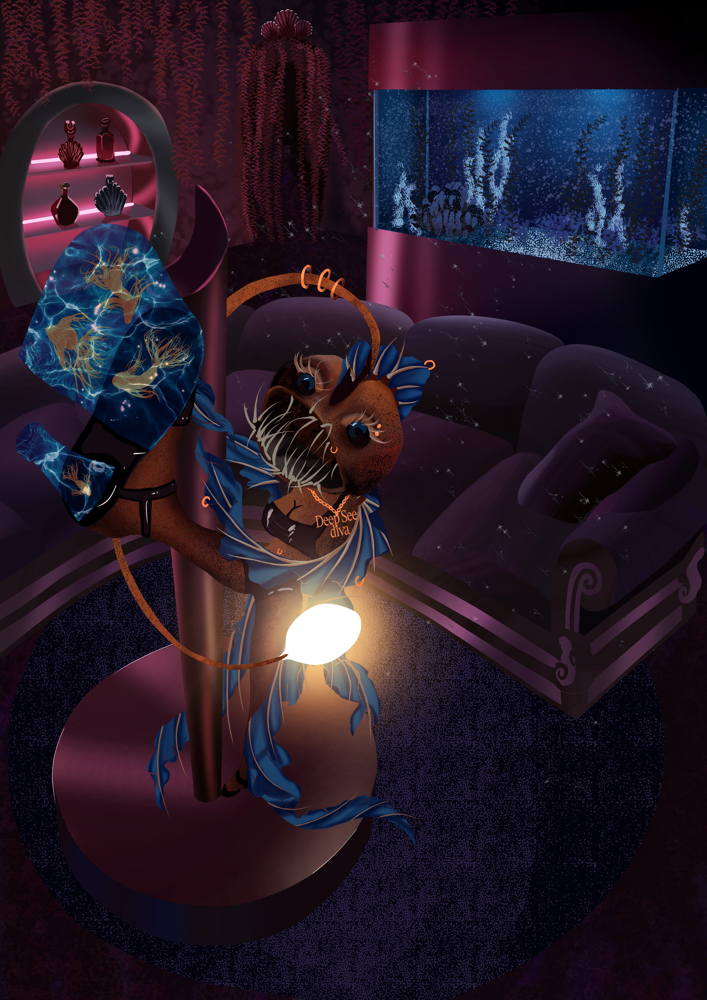

Whether you are building a new brand, looking to refresh your visual identity, promote your business on social media, or bring a creative idea to life, I can help transform your vision into impactful design. From logos and illustrations to advertising materials and digital content, I create visuals tailored to your goals and audience. My aim is to provide designs that not only look professional and memorable but also communicate your message clearly and effectively.
BRAND IDENTITY
Logo design, visual identity systems, color palettes and brand guidelines that give your business a unique personality.

ILLUSTRATION
Custom digital illustrations designed for personal projects, commercial use, merchandise and promotional materials.
SOCIAL MEDIA DESIGN
Professional posts, stories, banners and content packages that strengthen your online presence.

PRINT DESIGN
Posters, flyers, brochures, business cards and promotional materials prepared for printing.
MY DESIGN PROCESS
01
Consultation
Understanding your goals and project requirements.
02
Concept
Developing creative directions and visual ideas.
03
Creation
Designing and refining every detail with precision.
04
Delivery
Providing final files ready for use and implementation.